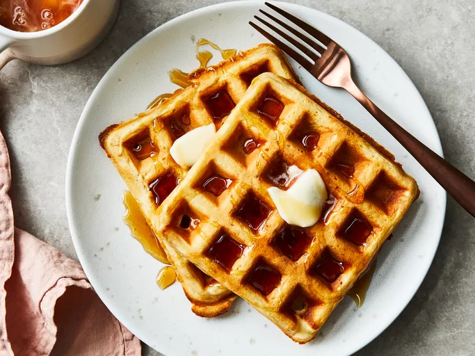

Classic Waffles

These waffles turn out lovely and crispy. Me and my girlfriend love them!
Ingredient list
2 cups all-purpose flour.
1 teaspoon salt.
4 teaspoons baking powder.
2 tablespoons white sugar.